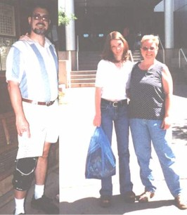
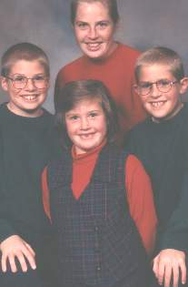
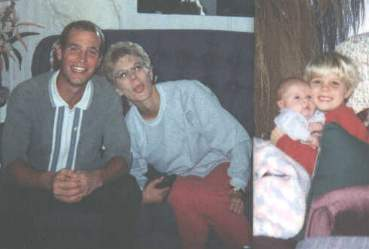

BHS 1967 Class
Roberta [Bert] (Morris) Maastricht
Click to Email
Click to Email
 1967 |
 Bobbi, our 19 yr old, Bob & I in 2002 |
|  my oldest daughter, Brenda and her 3 children |
 my son, Brad, his wife, Becky and there 2 children |